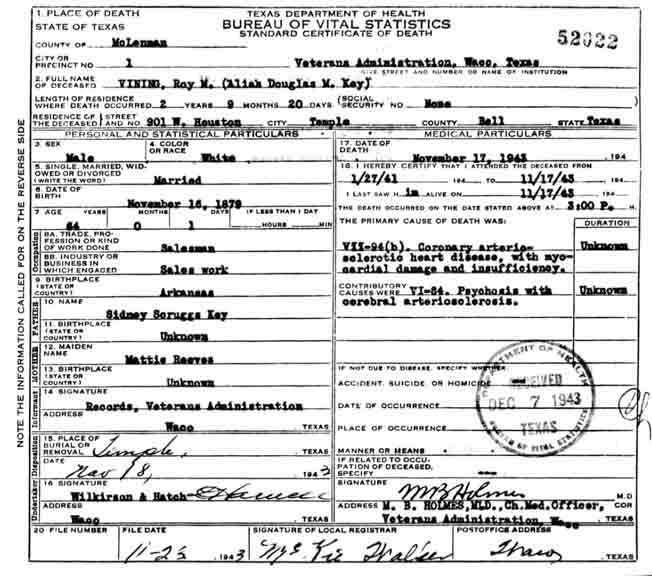
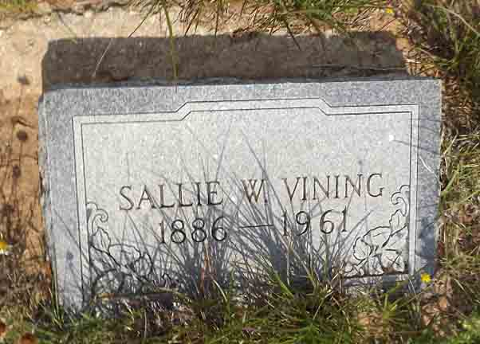

Documentation for Roy Marion Vining - Sallie Wells Barnett
According to his death certificate, “Roy Marion Vining” was an alias of Douglas M, Kay.
Death Data
Death certificate for Roy Marion Vining:

Gravestone for Sallie Wells (Barnett) Vining, in Fall Creek Cemetery, Travis County, Texas (from Find A Grave):
